ePRO
Desktop and native Android mobile app to collect patient reported outcomes.
What is Flask PRO?
- Flask ePRO provides a desktop and native Android mobile app to collect patient reported outcomes.
- Use the visual Forms designer and deploy to desktop and mobile.
Prerequisites
Study definition
To define study with ePRO, the study should be defined as the following: 1. Enable patient reported outcome module? 3. PRO URL: should be https://epro.flaskdata.io, (If the study has another PRO, then fill the PRO URL field with your study's PRO URL).
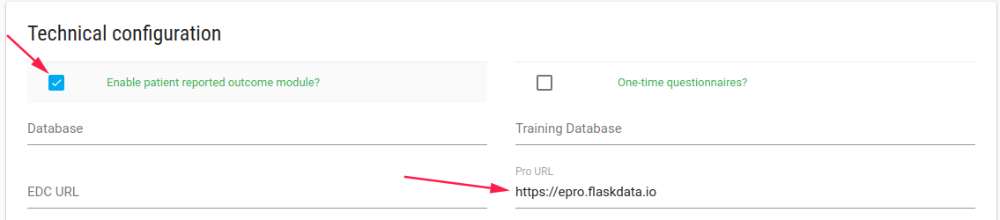
Forms definitions
To define ePRO questionnaire, you need to create CRF/s and Event that includes your diary CRF(s) first.
Second you need to create a Study Schedule with your period diary.
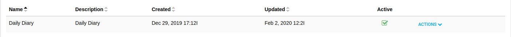
Welcome Email and SMS
When a subject has been created, the patient receives a welcome email and SMS with the PRO link.
The patient is invited to enter their diary.
If the patient forgets their password, site role user (CRC or PI) can go to the subject's profile page and send them a Welcome Back- Reset password email.
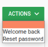
The patient will receive another welcome email.
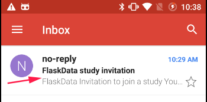
Subject invited
When the patient gets a welcome email/SMS,
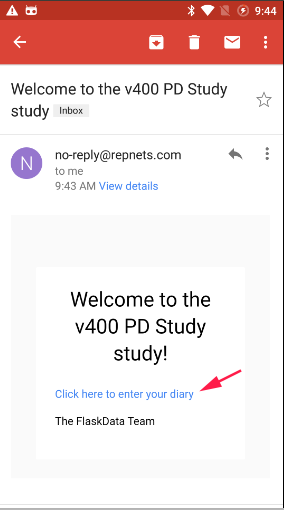
they should click on the link.
The patient is invited to login with their Google account, OR to choose a password.
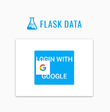
Note
To create a password or reset password - the CRC user should reset the subject's password by clicking on the Reset password option.
The patient will receive a reset password email.

After the subject sets their password, they can login to ePRO with their Google account or with their FlaskData password.
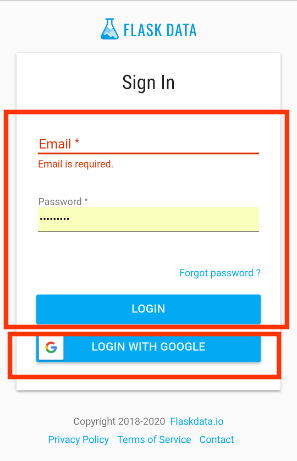
Android application
Installation
If the patient has an Android phone, they can install the Flask ePRO application from the Google play store.
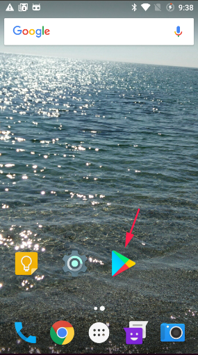
Search "flask epro" and install.
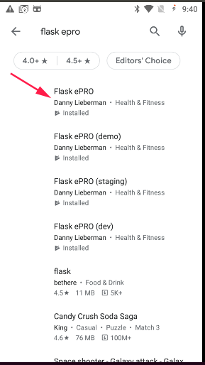
After the patient installs the Flask ePRO application, they will see the Flask ePRO icon
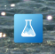
Just click on the application and login to ePRO, Enjoy 
Login to Flask ePRO
Open Flask ePRO application and login to your diary. (To login by email and password you should create the password first using the reset password option)
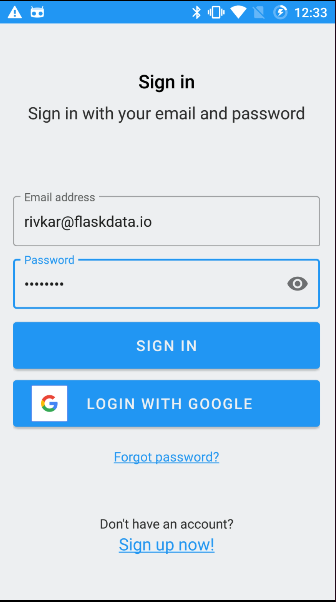
Enter diary
When the patient logins to ePRO, they see their diary for the current date.
They should complete the diary and save.
If there are a few Forms in the diary, the next form will be opened when the SAVE AND NEXT button is clicked.
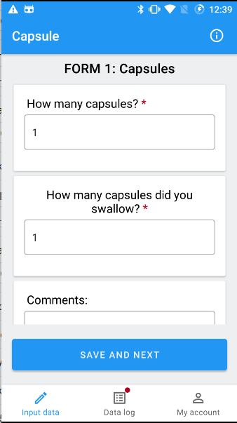
Important
- If the patient completed a part of their diary, they can continue later.
- If patient forgot to complete in their diary, they can still complete it within the next 2 days (By logs option)
Required fields are marked with a red asterisk.
If patient try to save the diary with missing information, an error flag appears.
Clicking on the error flag will open the error message.
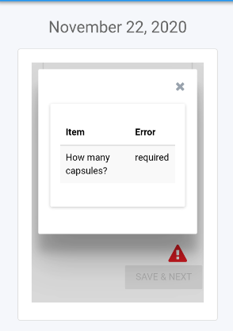
Input Data
The patient can click the Input Data option and complete their diary for the current date.
If they saved their data before, they can only view the data and cannot change it.
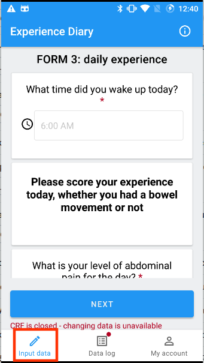
Logs
Patients can view and continue adding to diaries with the Logs option
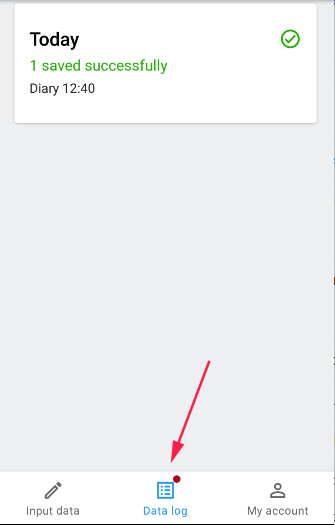
My Account
Patients can change their account definition by clicking on the My Account option
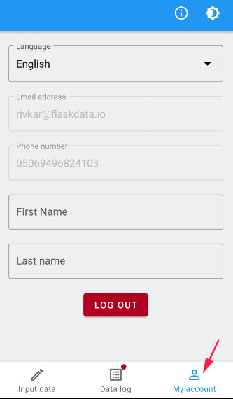
They can change their default language.
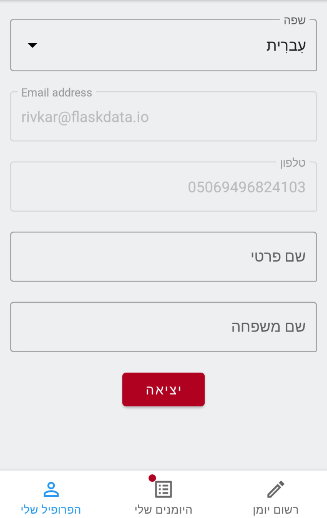
Support languages
For ePRO language support, the customer admin user should define it in the CRFs definition
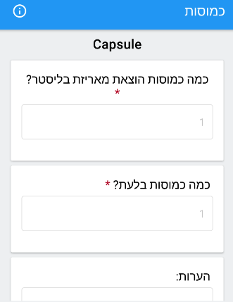
Patients can change ePRO display mode by clicking on theme option.
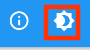
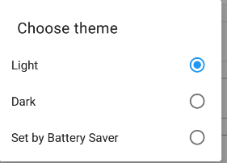
If they sets the mode as Dark they will see something like this:
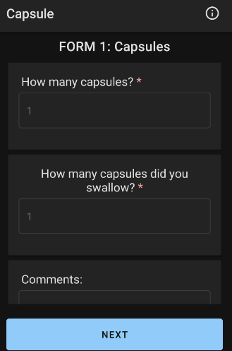
Study information
The patient can see details of the study they are participating in by clicking on the exclamation mark.
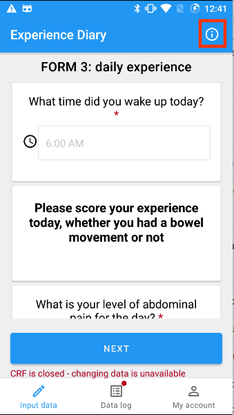
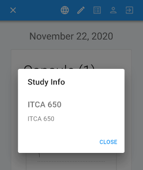
FlaskData application
If the subject cannot use Flask ePRO android application, they can use FlaskData application to enter their diary.
It's less beautiful but works great. 
In the case that the patients phone does not support Android it is better for the patient to use their desktop.
Login
The patient should login to FlaskData ePRO URL (https://epro.flaskdata.io)
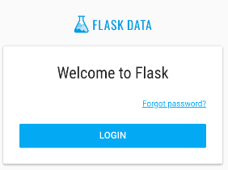
Input Data
When the patient logs into their diary, a diary for the current date opens.
They can start to fill the diary.
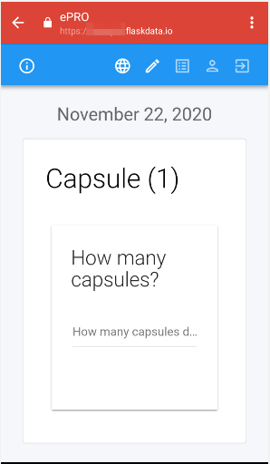
If there is another Form in the diary they should click the SAVE AND NEXT button.
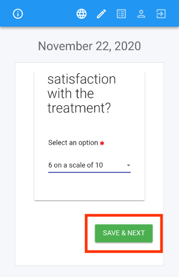
If they completed the last form, they should click the FINISH button.
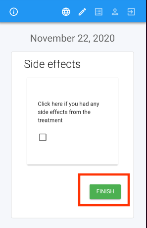
When the patient completes the diary, a success message appears.
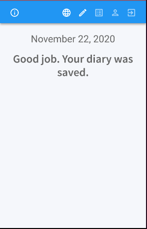
To go back to Input Data, click on the icon.
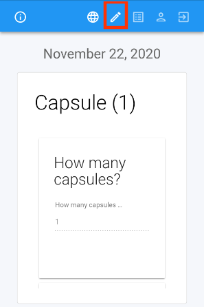
Logs
The patient can see their diaries using the Logs option.
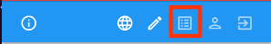
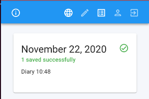
Using the logs option, the patient cannot change their diaries, only view them.
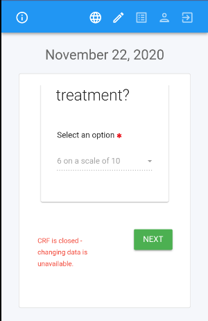
Forget Option
-
If the patient filled their diary but didn't finish, they can continue using Logs option
They can continue filling in data from yesterday's diary, as well as, from the diaries of two days ago.
-
If the patient forgots to fill their diary, they can enter data for yesterday's diary and for the diary of two days ago.
My Account
To see the account definition, click on the My Account icon.
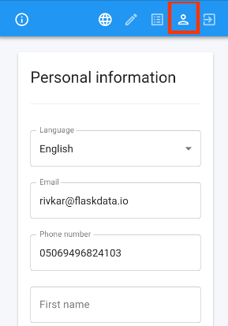
Note
Patients can change the language by click on the languages icon - this option change the language for this login but it doesn't change patient account definitions. In the next login the language will be set to the default language again.
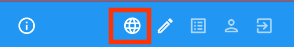
Be sure to save the patient's account information after changing.
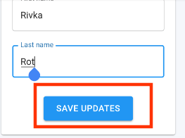
Study information
The patient can see details of the study they are participating in by clicking on the exclamation mark.
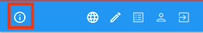
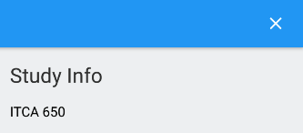
Logout
After the patient finish completing their diary, they can logout from the system by clicking the Logout icon.